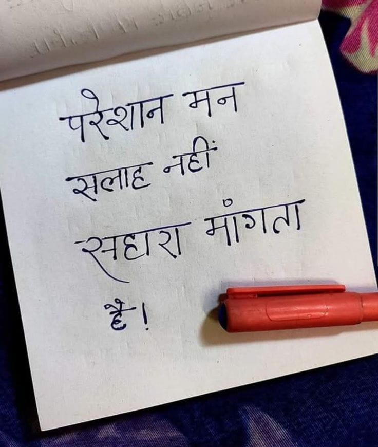

File: hin_sample_07.jpg

शान मन नहीं ale | eae i
#-ज | eS _—_ * Nl SEER UIS BES or en ne ee we tet cio WMO eh ae ses: Sas geet AP Ania eee awe” aes Hine MAE RN wh been yi? awe हा ‘ हर x SA er got ONG ONG hare Se fet on RAE SOT eee 46. My A? A woo an a ue cs cod “6 \ Ney an paper ee eer whe eee pow पड मु © अं wns Caras ye Be ty AEN G \ ae ak ge ee Eke ME पा vp ONE रु oy eb Fe Va be a reek bi oR at. pees a 75 Wyte ot .t 4 ANS co oe 2222 Bers 7579 TALES = ee ee re ‘ ; ae ही tk =e BS) anid Til boa ts 4062 ८7 Wok Ws Wo \ . it नमन yi yay! HH heer ER दि श पा aa wee SPINS AFA at! ei yee Yada ae \ , pF A 2] NEL RSA, 20६१0 4 ae eh cia jhe 4 at Ny टन ० MESS NS Pas pee ae कर he न ८ +, व : anette of 2४52५ - ¥ 2 ANS ona \' ५ ,०४४- 3.४४ oo een mi ae ep १ ट किए py Bee She 0, hie Ge मच | et Ese Lae a the rss 253 [20.7 Bee. FE So हे elo Jae gen pti ०६५८6: हि ्स्म ० te TRA seh SEE भर ie tp 8: कम HY Bates IN Bes ae 4 ee a 8 ved et eee AEG ERS EE) Hi CAL SHAY BS Be 3D | fest hid «4. 7055). ‘CES ASO Tras! aA bit ६५ ana ee” oar दा fl | पे विज Oe ea] UI 022८ 00 5, yee ieee aed eae ५. किला कल i is aes Ser फ Wrage ese hot ee ON: iV V7 com! SB ENE a कट न, al a ere AS pty bo Shae |) शत (शव जज Ey eS quanti pen ae oe inp Re 2४ cree 5 | AES Pees Pree ॥:२४४४९०३/४ एक “४82 कि पर ता कि 4 ba et मम od Masha atest ee sald! दशा fade ope dE , ४ मत) TE धर Sith 02270: 52 ha Recs a 2 A ye fee ae ee oe Bost Ve ane 20५४४ SSE rs BO = j =) “या CE cA fo Ae qa8 Reece ay नदी Foal <a fae FAS i Portree a Me Brees रा ene ॥ 72% 3०८ EA ES Ad HA, 0 Eine AY enema 2009 JE Wey 0207 pe aN ae & | 2 का 8 Fete pes Aarti fen ३) हि | see 3, 7-70 7 poy a Pan he asa मर = Nee ९४:८८ VENUES tog (0 22:24 4 yt - आई We तय हर ५0-00 6200: 7 ine मर ता Ae [ ye 55 he auth कर ar rane 0४४४ ७३३० न oe re re | | DU RETLEO NTR ACY BRM जप 2 oe SE Pe ie Wes ० ५5, 7 oa Zt Te Meee eee eR Ra! ats eee Tr Aq Ve iy Tidy eto lit SS pe eles ee a ee Wee faa ett Lutein? we oh Une =e SSA ee पलट re cer ee in| {eR गा eee = Pais Rect wit pe ELS १27 we Ts wy | हज eS Rt Aa oe i Reese a prise ee ~ Sat मा 4५ alent] Hee Rea, Te at \ ५ TERS tt Ves TESS: oy, ‘ rea man eee We AES ४४ ey <domee Va ee a ede ad a he c_. one eee NREL” ss Yop Pa ae oe sl eae है पट ie pei eae =i aR ba mabe vw ag 007४, , कि आओ OREO 2:77 :. 3४० Mi Fe see ee He amen ae tne on way pars q aE eas Gok brea Loh recent Ss zattens न _ nae an Bee ay | Oi aon eae ea eran oe a Ma a in aa न हि हम aes an Dead Baca Woy an arene पी LM OS ne ao. a a a A Se, SRE SAAR fo Mea a are: का xe iy aS 0.27 Mose या se eee ne Comm (H ye RAE yo (Of 9 ला more ae eA wp Aa as Ee Tt Se tices eran Bie qh og Ss Laer oat 7 SES ON Rican eee se orn - MO | सच 227 ८१22८. ०, anes ~ « “oe, - ARS is Bt मल ae . lees S pd $y eS tne Ce PERK < TET ५.५ गा । _ ० RENE Ue x SESE aR प् 0000 \ < ye a a gt 3 Ee | SERRE at ‘ रू प्र ok BRAN a rae AN SOs ४५ ४८ TASS सो 3 ५7 AS ANS a WS ५ RN A aren My Fay m0 « a पे x PSN AXE OREN AN रे रे SN 9 08: rane 2 Me 0 Sa Ar . \ xen रे हर Ss “ir पु yy 5 2 कि Nea 2०४८१ +. SS As SS sa res Nie
मन नहां सलाह मागत
❌ OCR Failed
ॢत्य-न
परेशान ग सलाह नहीं सहारा मागता
क परेशान मन सलाह नहीं सहारा माँगता हू।